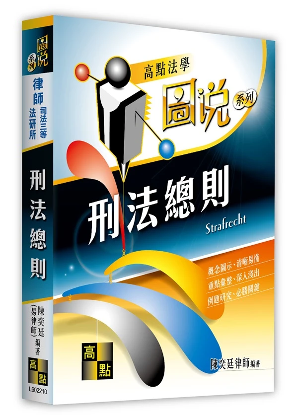

刑法總則
Strafrecht
概念圖示・清晰易懂
重點彙整・深入淺出
例題研究・必勝關鍵
刑法總則【圖說系列】
Strafrecht ・ 概念圖示與例題解構
本書專為法律國考與學術深造打造，以清晰的概念圖示化繁為簡，貫穿「不法推定罪責」與三階層論罪體系。緊扣重要學說爭點與司法實務見解，協助考生奠定最堅實的刑法總則思維。
教材特色與編排方針
概念圖示・清晰易懂
運用圖解化結構呈現抽象刑法法理，化繁為簡，直觀掌握犯罪評價雙軸心。
重點彙整・深入淺出
嚴謹對齊易律師教材原文，彙整國內通說、重要實務爭點及 2026 現行法規查核。
例題研究・必勝關鍵
剖析代表性案例（如不知法律、責任能力判斷），提煉解題得分論述精華。
書籍核心圖解與插圖預覽
查看全部內文圖解 →行為評價面（不法）與行為人評價面（罪責）之相互推定與反證架構。
不知法律、年齡、精神障礙、瘖啞生理與防衛過當之法定抗辯檢驗。
導論 犯罪概念與論罪結構
本篇導讀 (Conducted Read)
「本篇是對刑法的初步鳥瞰。首先介紹犯罪概念與通說採取的三階層體系論，再快速瀏覽刑法的論罪結構。期望帶領讀者建立一個穩固又直觀的思維流程，畢竟法律不該是象牙塔裡的學問，而是人類生活經驗的縮影與結晶。」
第一章 犯罪的概念
嚴格依據教材第 1-1 ～ 1-9 頁內容收錄
一、犯罪的核心直觀：「一個壞人做了一件壞事」
刑法是一部處理犯罪的法律，至於如何謂犯罪？簡單說，「一個壞人」做了「一件壞事」就是犯罪。
經驗告訴我們判斷誰是壞人非常困難，但判斷一件壞事卻比較容易，因此我們決定先判斷「是否有一件壞事發生」，再判斷「做這件壞事的人是不是一個壞人」。
基於經驗的累積，會做壞事的人絕大多數（不是百分之百！）都是壞人，所以確定一件壞事的發生，就先「推定」做這件壞事的人是一個壞人，這就是「壞事推定壞人」原則。
有鑑於這只是一個經驗上的直覺假設，而人類經驗卻不完全可靠，使用推定這個法律概念，為我們保留反證推翻假設的機會。我們將壞事以「不法」代稱，壞人以「罪責」代稱，前述的推定模式就是「不法推定罪責」原則，而推翻罪責推定的理由稱為「阻卻罪責事由」。
二、不法推定罪責原則（教材第 1-1 頁 原文圖解）
三、反證推翻的機會與法定例示（案例 1-1 ～ 1-5）
承上，當行為人做了一件壞事而被推定為一個壞人，法律將賦予行為人反證推翻的機會，亦即行為人可以主張一些有利於自己的理由，證明自己並非是一個壞人。
這些反證推翻的理由，立法者很貼心的在刑法當中加以例示：
主張「欠缺不法意識」的抗辯（§ 16）。亦即不知道法律對其行為有所禁止，因而雖做壞事，但卻不是壞人。
條文內容：「除有正當理由而無法避免者外，不得因不知法律而免除刑事責任。但按其情節，得減輕其刑。」（採責任理論，非有不可避免之正當理由不得免責）。
主張「欠缺責任能力：年齡」的抗辯（§ 18）。會做壞事是由於不懂事，因而雖做壞事，但卻不是壞人。
法規連動備註：刑法第 18 條文字無更動（未滿 14 歲不罰、14～18 歲得減其刑、滿 80 歲得減其刑）。民法第 12 條成年年齡於民國 112 年 1 月 1 日下修為 18 歲，與刑法滿 18 歲具完全責任能力達成一致。
主張「欠缺責任能力：精神」的抗辯（§ 19）。行為人根本不知道或沒辦法控制自己的行為，因而雖做壞事，但卻不是壞人。
1. 憲法法庭 113 年憲判字第 8 號判決（113.09.20）：宣告刑法第 19 條第 2 項情形（精神障礙致辨識或控制能力顯著減低者）不得科處死刑；受死刑判決者若有精神障礙，亦不得執行死刑，具憲法位階強制拘束力。
2. 保安處分重大修正（刑法 § 87 監護處分，111.02.18 修正）：因應第 19 條第 1 項不罰判決，修法延長監護期間（每次最多 3 年、無次數限制，每年由法院定期評估）並健全分級處遇。
主張「欠缺責任能力：生理」的抗辯（§ 20）。瘖啞人較一般人不知事，因而雖做壞事，但卻不是壞人。
條文內容：「瘖啞人之行為，得減輕其刑。」聯合國身心障礙者權利公約（CRPD）國際審查委員會多次建議檢討刪除本條避免生理標籤化，立法院曾有討論但截至 2026 年現行條文仍有效施行，實務嚴格從限於自幼瘖啞且未受正常教育者。
四、超法定阻卻罪責事由與「期待可能性」（案例 1-6）
當然立法雖密仍有一疏，若是在刑法典中找不到反證推翻理由，也允許找尋刑法典外的理由，亦即「超法定阻卻罪責事由」。
現今犯罪體系以「行為人有無（不做壞事的）期待可能性？」作為罪責的實質非難核心，若行為人可被期待不做壞事便是具備罪責，既然期待可能性是罪責的核心，那麼法定或超法定阻卻罪責事由都必須依循期待可能性來詮釋。
主張「無期待可能性（或低度期待可能性）」的超法定抗辯。作父母的在幼兒受傷的情況下必然手足無措，對於這種處境特別艱難的行為人，社會難以期待其冷靜地拔掉插頭以避免火災發生，因而雖做壞事，但卻不是壞人。
法規狀態：刑法總則截至 2026 年未明文增列概括條款，司法實務與學說通說一致肯認「期待可能性」為罪責實質非難之核心，若客觀處境極度重大艱困致無法期待行為人遵守規範時，得阻卻或減免罪責。
五、阻卻罪責事由之體系展開（教材第 1-4 頁 原文圖解）
行為人是否具有「不做壞事的期待可能性」？若處於極度艱困無期待可能，即無罪責非難之餘地。
面臨突發危急險境，難以苛求精準拿捏反擊力道，立法賦予廣泛減免裁量：
法官在極端艱困案型中，依期待可能性之實質非難核心，個案排除非難性。
六、壞事（＝不法）該如何判斷？巴掌感受與雙重指標
接著我們來看壞事該如何判斷。所謂壞事（＝不法）就是「無緣無故做出令人覺得不舒服的行為」，可以簡單拆解成兩個指標：
重要生活利益受到破壞。立法者將這些公認不舒服的行為特徵歸納後寫在刑法中，形成各個分則罪名（殺人、傷害、強制性交、強盜等）。
附加說明此破壞有違整體法律秩序而並不正當。人們發現自古以來令人不舒服的行為鮮少有正當理由，因此確認法益侵害便直接「推定」該行為無正當理由。
這代表身體的重要生活利益（身體法益）遭受破壞。先判斷法益侵害！
這代表剛才對方的舉動是莫名其妙的（無正當理由）。再判斷無正當理由！
💡 思維法則：壞事乃「法益侵害 ＋ 無正當理由」之組合，且依感受的順序，先判斷法益侵害，再判斷無正當理由。
七、構成要件該當性推定違法性原則（教材第 1-5 頁 原文圖解）
前述的推定模式是「構成要件該當推定違法性」原則，而推翻違法推定的理由稱「阻卻違法事由」。
八、阻卻違法事由之反證推翻與法定例示（案例 1-7 ～ 1-11）
當行為因該當構成要件而被推定為無正當理由後，法律將賦予行為人反證推翻的機會，亦即可以主張一些有利於自己的理由，證明法益侵害是正常的。
這些反證推翻的理由，立法者在刑法第 21 條至第 24 條當中加以例示：
主張「依法令之行為」的抗辯（§ 21 Ⅰ）。由於這是法規所允許的墮胎行為，縱使的確造成法益侵害（胎兒生命），但卻因為有正當理由而並非壞事。
條文內容與法理：刑法 § 21 第 1 項「依法令之行為，不罰。」醫師符合優生保健法所定之醫療與優生事由施行人工流產，合於法令阻卻違法；近年主管機關持續研擬《生育保健法》修正草案，擬廢除人工流產需配偶同意權規定，貫徹女性身體自主權，惟不論條文修正與否，合法醫療處遇皆屬「依法令之行為」而不罰。
主張「依命令之行為」的抗辯（§ 21 Ⅱ）。由於有合法的上級公務員命令存在，縱使的確造成法益侵害（所有權），但卻因為有正當理由而並非壞事。
條文內容與審查要件：刑法 § 21 第 2 項「依所屬上級公務員命令之職務上行為，不罰。但明知命令違法者，不在此限。」要件包含：發令者與行為人具備職務上下監督隸屬關係、命令屬職權範圍且具法定形式；但書採「相對服從說」，若公務員明知命令違法（如長官命令銷毀特定證據）仍盲從執行者，不得免責，以杜絕公務濫權。
主張「業務上正當行為」的抗辯（§ 22）。正當的業務執行乃社會分工所必需，縱使的確造成法益侵害（重大身體），但卻因為有正當理由而並非壞事。
條文內容與醫療常規：刑法 § 22「業務上之正當行為，不罰。」醫師執行合法外科手術、結紮等侵入性醫療處置，客觀上侵害身體完整性，但只要出於醫療目的、合於醫療水準常規，並依醫療法第 63、64 條履行說明與知情同意程序，即屬業務上正當行為阻卻違法。
主張「正當防衛」的抗辯（§ 23）。本於「自我保護」以及「正者毋須向不正者低頭」的社會共識，面臨現在不法侵害時應有反擊的權利，縱使的確造成法益侵害（身體），但卻因為有正當理由而並非壞事。
條文內容與審查要件：刑法 § 23「對於現在不法之侵害，出自防衛自己或他人權利之行為，不罰。但防衛行為過當者，得減輕或免除其刑。」要件包含：(1) 面臨現在不法之侵害；(2) 主觀上出於防衛意思；(3) 防衛手段客觀上具有適當性與必要性（侵害最小且有效）。逾越程度者為防衛過當，轉為罪責層次之寬恕事由減免處罰。
主張「緊急避難」的抗辯（§ 24）。本於「社會連帶性原則」以及「自主原則」的社會共識，面臨緊急危難時應有轉嫁的權利，縱使的確造成法益侵害（居住自由），但卻因為有正當理由而並非壞事。
條文內容與轉嫁界限：刑法 § 24 第 1 項「因避免自己或他人生命、身體、自由、財產之緊急危難出自不得已之行為，不罰。但避難行為過當者，得減輕或免除其刑。」緊急避難係將危難轉嫁給無涉之第三人，要件更嚴謹：(1) 危難不限於人為（包含野獸襲擊、天災）；(2) 不得已性（最後唯一手段）；(3) 利益衡量：所保全之法益必須顯著優於所犧牲之法益。
九、超法定阻卻違法事由與利益衡量原則（案例 1-12 ～ 1-15）
「通說見解肯定在法律未規定的情況下，可以尋求『超法定阻卻違法事由』來推翻推定，現今犯罪體系自『是否合於利益衡量？』思考違法性，並綜合結果與行為來觀察。」
若犧牲利益大於保全利益，由結果層面觀察相差過於懸殊，可以肯定違法性！（如案例 1-14 櫻桃案）
若為達目的而不擇手段，手段悖離法律秩序與正當性，亦肯定違法性！（如案例 1-15 輸血案）
主張「得被害人承諾」的超法定抗辯。因為被害人在自由意志下自行放棄對法益的保護，縱使的確造成法益侵害（身體），但卻因為有正當理由而並非壞事。
法理要旨與界限：刑法通說長期肯認「得被害人承諾」為超法定阻卻違法事由，惟僅限於個人具完全處分權之法益（如財產權、輕微身體法益如黑白猜遊戲掌摑或紋身）；對於不可任意處分之重大法益（生命、重大身體健康），法律特別以刑法 § 275、§ 282 處罰，不許以承諾免責。
主張「義務衝突」的超法定抗辯。此時行為人已經盡其所能地履行義務，縱使的確造成法益侵害（生命），但卻因為有正當理由而並非壞事。
法理要旨：行為人同時具備數個法律上同等或不等之積極作為義務，因客觀能力所限無法同時履行全部，在窮盡所能履行其一義務時，其對未履行之他義務不具客觀期待可能性，整體法規範不強人所難，阻卻違法。
患有小兒麻痺而必須以輪椅代步的櫻桃園主人，在面臨小學生偷偷進入其所屬櫻桃園偷採櫻桃的不法侵害時，只能選擇用開槍的方法加以制止，雖然保全了一顆櫻桃不被偷走，卻造成了小學生的死亡。
在本案例中，由於犧牲利益（生命）遠大於保全利益（一顆櫻桃），由結果的層面觀察相差過於懸殊，違反整體法秩序而無正當理由，無法阻卻違法。
法理要旨：正當防衛雖本於「正者毋須向不正者低頭」，但仍受「誠信原則與禁止權利濫用」之極端檢驗。當所保護之財產法益微不足道（一顆櫻桃），而防衛手段所犧牲者為至高無上之人的生命，結果價值落差極端失衡，防衛權之行使即屬權利濫用，行為仍具違法性，肯定成立殺人罪或傷害致死罪。
甲因為車禍重傷而送至醫院急救，生命垂危而有大量輸血的需要，但醫院正好缺乏稀有的同型血液，醫師乙知悉醫院義工丙與甲的血型相同，要求助於丙，但遭丙拒絕，乙為救助甲的生命，便使用強制力抽取丙的血液用於甲的醫療，最終救活了甲。
縱使保全利益（生命）大於犧牲利益（自由），但乙所使用之手段嚴重違反人性尊嚴（將丙當成輸血機），自行為層面觀察並非達成目的的合理手段。違反整體法秩序而無正當理由，無法阻卻違法。
法理引申核實：此即前述「若為達目的而不擇手段，亦肯定違法性」之典範案例。醫師縱為拯救甲之重大生命法益，但強行抽取已明確拒絕之義工丙血液，將人工具化作為輸血機器，嚴重侵害憲法第 22 條所保障之身體自主決定權與人性尊嚴核心，手段欠缺合理性與正當性，無法阻卻違法。
十、阻卻違法事由之體系展開（教材第 1-8 頁 原文圖解）
- • 依法令之行為 § 21 Ⅰ
- • 依命令之行為 § 21 Ⅱ
- • 業務上正當行為 § 22
- • 正當防衛 § 23
- • 緊急避難 § 24
-
• 得被害人之承諾 案例 1-12
被害人自由意志放棄個人處分權法益
-
• 義務衝突 案例 1-13
數個同等作為義務客觀不能同時履行已盡所能
十一、犯罪三階層體系論（簡稱三階論）之統整
我們來作個統整。
構成要件該當性階層
首先判斷行為人的所作所為是否符合分則條文的描述。
違法性階層
再來構成要件該當將推定違法性，因此必須尋有無阻卻違法事由。
罪責階層
最後不法將推定罪責，所以必須找尋有無阻卻罪責事由。
當行為人的罪責終局地被確認後，即可宣告犯罪成立。學說將這種「構成要件該當性（TB）➔ 違法性（R）➔ 罪責（S）」的三階段判斷模式，稱為「犯罪三階層體系論（簡稱三階論）」。
十二、犯罪三階層體系論（雛形）架構圖解（教材第 1-9 頁 原文圖解）
十三、目的犯罪體系與客觀／主觀要件之開展
基於三階論，我們再為他添加些內涵。
- • 不法是壞事的外在判斷 ➔ 純客觀的
- • 罪責是壞人的內在判斷 ➔ 純主觀的
- • 受目的行為理論影響
- • 認為目的乃判斷不法的重要基礎
- • 不法不是純客觀的，而是客、主觀的綜合評價
「此外，構成要件該當發生推定效力後，要想推翻違法性推定，必須阻卻違法事由客、主觀要件均該當，否則推定效力將繼續維持，只能進入罪責審查。」
十四、犯罪三階層體系（完整）與推翻違法性之實例檢驗
貫徹第 1-9 頁「阻卻違法事由客、主觀要件均該當方能推翻推定」鐵律，透過案例 1-16 與 1-17 進行實證檢驗。
- 客觀要件（外在行為、因果）
- 主觀要件（故意、過失）
- 客觀阻卻違法要件（情狀、手段）
- 主觀阻卻違法要件（防衛/避難意思）
不法推定行為人具期待可能性（罪責）。
「由於乙天生一副兇神惡煞貌，致使甲誤以為前來問路的乙對自己不懷好意，因此本於保護自己的意思先發制人，將乙打成輕傷。」
甲該當傷害罪的構成要件（§ 277），由於僅能滿足正當防衛的主觀要件（防衛意思），欠缺客觀上的防衛情狀，不生推翻違法的效力，必須繼續進行罪責的審查。
刑法 § 277 第 1 項傷害罪（108年提高罰金刑）。學理上為典型「誤想防衛」，實務多數採限制法律效果之責任說，不具罪責故意，僅得依過失傷害論處。
「角頭老大甲某日在路邊某巷道時，發現對向走來的乃是新興幫派的老大乙，甲心想先下手為強而掏槍將乙射殺。殊不知在此之前，乙放在口袋內的手也正用手槍瞄準甲，想致甲於死地。」
甲該當殺人罪的構成要件（§ 271），由於僅能滿足正當防衛的客觀要件（防衛情狀與防衛行為），欠缺主觀上的防衛意思，仍不發生推翻違法的效力，必須繼續進行罪責的審查。
刑法 § 271 普通殺人罪受 113年憲判字第8號拘束（死刑僅限個案犯罪情節最嚴重且踐行最嚴格程序）。學理上為典型「偶然防衛」，通說實務認不阻卻違法，論以既遂或類推未遂處罰。
十五、犯罪二階層體系論（簡稱二階論）與「四塊拼圖說」
澄清二階論不區分 TB 與 R 的天大誤解！解析三階論與二階論本質上僅是「四塊拼圖」的不同排列組合。
學理上另有主張「犯罪二階層體系論（簡稱二階論）」，與通說最大差異在建構不法的方式。很多人以為二階論不區分TB與R，這是個天大誤解，實際上二階論所有不法組成要件都與三階論相同，只是排列組合不同罷了！
由「構成要件該當性與違法性」出發建構不法（橫向階層切分）。
由「客觀要件與主觀要件」出發建構不法（縱向客主觀切分）。
• 主觀不法 係「主觀構成要件該當 且 無主觀阻卻違法要件」
換言之，構成要件該當推定違法性原則將各自在客觀不法與主觀不法中產生作用，這是與三階論的最大不同。簡單說不法是由此四塊拼圖所組成，三階論與二階論僅是四塊拼圖的不同排列組合，因此兩種體系在大多數案件中會得出相同結論。
第一章「犯罪的概念」從直觀壞事壞人、期待可能性、法定與超法定阻卻罪責、利益衡量、法定與超法定阻卻違法、三階論到二階論與四塊拼圖已完整收錄！等待第二章教材。
第二章 刑法的論罪結構
探討構成要件本質、處罰原則（故意既遂）、例外擴張處罰門檻（未遂犯與過失犯）、阻卻事由之例外排除（挑唆防衛、原因自由行為）及其他刑罰要件
一、構成要件的本質與「故意＋既遂」處罰原則
經驗累積 構成要件：人類無法忍受的最典型非法
構成要件是經驗累積的產物，能夠被編寫成犯罪構成要件之所作所為，必然都是最典型的非法，也可以說只要是身為人類都無法忍受的犯行。
構成要件該當性有客觀與主觀之別。以殺人罪為例，立法者經驗上所設想的係「出於殺人故意而殺死他人之行為」，亦即客觀與主觀完全該當之情形：
學理上將客觀該當稱為「既遂」
學理上將主觀該當稱為「故意」
二、例外擴張處罰之雙重門檻與觀念辨正
客觀構成要件不具備僅是「非既遂」，絕非當然等同於法律上的「未遂犯」！
主觀構成要件不具備僅是「非故意」，絕非當然等同於法律上的「過失犯」！
若要想例外地擴張處罰，除要有法律的明示處罰規定外（罪刑法定原則），還必須滿足其他犯罪成立要件。
刑法分則或總則必須明文規定處罰（如未遂犯依 § 25 Ⅱ 須有特別規定、過失犯依 § 12 Ⅱ 須有特別規定）。
必須滿足該特別犯罪型態之實質要件（例如未遂犯須滿足「客觀著手 ＋ 主觀故意」）。
三、案例 2-1 西瓜刀砍人案與殺人未遂之審查（教材第 1-13 頁）
甲手持西瓜刀，耍了一套西瓜刀法想要砍死乙，不料乙施展凌波微步閃過。
甲客觀上並未殺死乙，客觀構成要件未該當，並非處罰原則（原則不罰）。
依刑法 § 25 Ⅱ ➔ § 271 Ⅱ，法律明文規定殺人未遂犯罰之。
滿足其他犯罪成立要件：客觀上有著手 ＋ 主觀上有故意，論以殺人未遂犯。
四、案例 2-2 西瓜刀練刀致死案與過失犯之審查（教材第 1-14 頁）
甲手持西瓜刀，在空地上認真練習西瓜刀法，乙施展凌波微步自一旁走過，不慎中刀身亡。
乙中刀死亡，客觀上發生死亡結果，客觀構成要件業已該當（達既遂狀態）。
甲僅認真練刀，無殺害乙之故意。主觀要件不該當，並非處罰原則（原則不罰）。
依刑法 § 12 Ⅱ ➔ § 276 Ⅰ，法律明文規定過失致死罪罰之。
滿足要件：客觀達既遂 ＋ 主觀具預見可能性，論以過失致死罪！
五、【解題提示】直覺誤區辨正與 § 12 之法條邏輯證明（教材第 1-14 頁）
在初學刑法時，初學者常依生活直覺作出「非黑即白」的草率論斷，誤將客觀不該當等同於未遂、主觀不該當等同於過失。這兩大盲點是國考解題與案例審查中最致命的失分陷阱！
辨正：客觀構成要件不具備僅是「非既遂」。要成立未遂犯，除分則明文處罰未遂（§ 25 Ⅱ）外，更必須滿足實質要件：「客觀上有著手 ＋ 主觀上有故意」。若連著手都未達到（例如僅止於陰謀或預備階段），根本不成立未遂犯！
辨正：主觀構成要件不具備僅是「非故意」。要成立過失犯，除法律明文處罰過失（§ 12 Ⅱ）外，更必須滿足實質要件：「客觀達既遂 ＋ 主觀具預見可能性」。若根本欠缺預見可能性（不可抗力或意外事件），屬於「無過失」，依法絕對不罰！
「行為非出於故意或過失者，不罰。」
【嚴密反證邏輯推導】：
- 假定反面命題成立：如果「非故意 ＝ 過失」，那麼世界上人類行為的主觀心理狀態就只有「故意」與「過失」兩種，非此即彼，絕無第三種可能。
- 推導出邏輯荒謬：若非故意即過失，則任何一個行為若「非出於故意」，就必然「出於過失」；世上根本不可能存在「非出於故意，且非出於過失」的狀態。
- 法條文字化為廢話：如此一來，刑法 § 12 Ⅰ 後半段「...或過失者，不罰」在現實中將永遠無適用的可能，整段立法將徹底淪為無意義的贅語！
- 邏輯結論：既然立法者特地明文寫下「非出於故意或過失者，不罰」，即鐵證證明世界上必定存在第三種心理狀態——【非故意 且 非過失】＝【無過失（意外事件）】！
六、阻卻違法之例外排除與案例 2-3（意圖式挑唆防衛，教材第 1-14 ～ 1-15 頁）
階層邏輯 違法性階層之原則與「例外排除」
該當構成要件之行為，原則上受違法性之推定；行為人若能主張正當防衛（§ 23）、緊急避難（§ 24）等法定或超法定事由，原則上阻卻違法。然而，法律秩序不容許權利之濫用——若行為人客觀上看似符合防衛情狀，但實質上具有侵害意圖在先或嚴重權利濫用者，例外排除阻卻違法事由之適用，回歸違法並成立犯罪！
甲是法律系學生，知道刑法第 23 條正當防衛不罰。甲想痛扁情敵乙，故意設局在路上對乙瘋狂挑釁辱罵其祖宗十八代，激怒乙出手朝甲揮拳。甲算準時機，抄起預藏的鋼骨雨傘猛擊乙，導致乙受有多處挫傷瘀血。
乙先出手揮拳，客觀上看似存在「現在不法之侵害」；甲持傘反擊看似為排除侵害之防衛行為。
甲自始具備傷害故意，設局辱罵誘敵出拳，將正當防衛作為傷害他人之掩護工具，構成「意圖式挑唆防衛」。
權利濫用不受法秩序保護！例外不得主張 § 23 正當防衛，甲仍成立刑法 § 277 條第 1 項普通傷害罪！
防衛手段所保全之法益與所侵害之法益顯失均衡（如為保護幾顆櫻桃而開槍擊斃偷摘少年），構成權利濫用，不阻卻違法。
避難手段不得踐踏人格尊嚴。即便是為救他人性命，亦絕對不得強行抽取非自願路人之血液，無緊急避難之適用。
公務員依所屬上級公務員命令之職務行為原則阻卻違法；但但書明定若「明知命令違法者」，例外排除，不阻卻違法。
依公務或業務負有特別義務者（如消防員滅火、軍警執行任務），不得主張緊急避難以圖逃避本身應負之法定救助義務。
七、阻卻罪責之例外排除與案例 2-4（原因自由行為，教材第 1-15 頁）
階層邏輯 罪責階層之「同時性原則」與例外排除
刑法基本原則要求「行為與責任能力同時存在」（責任同時性原則）。若行為人在著手行為之時，因精神障礙或心智缺陷致不能辨識行為違法或欠缺控制能力，依刑法 § 19 Ⅰ 原則上不罰（阻卻罪責）。然而，若行為人係「故意或過失自陷無責任能力狀態以實施犯罪」，法律將例外排除阻卻罪責之適用，此即「原因自由行為」（Actio libera in causa）！
甲想殺死情敵乙，但平日生性怯懦不敢下手。甲心生一計，生吞蛇膽並狂灌高粱酒壯膽，讓自己陷入爛醉如泥、完全喪失辨識與控制能力的泥醉狀態。隨後甲在意識不清的爛醉狀態下，持刀衝入乙家將乙亂刀刺死。
甲刺殺乙時，已陷入泥醉狀態，客觀上確實符合刑法 § 19 Ⅰ 不能辨識或控制之無責任能力外觀。
甲自陷泥醉前具有完全責任能力，且係基於殺害乙之故意而蓄意飲酒，後續殺人行為乃其意思決定之延伸。
依刑法第 19 條第 3 項明文排除責任減免，甲不得主張阻卻罪責，仍成立刑法 § 271 Ⅰ 殺人既遂罪！
「前二項規定，於因故意或過失自陷精神障礙或其他心智缺陷之狀態，致有第一項或第二項之情形者，不適用之。」
我國刑法自民國 94 年修法時，正式將德國與日本刑法學理上之「原因自由行為」法文化，明定為第 19 條第 3 項。凡行為人故意或過失自招心神喪失狀態者，徹底封死其主張無責任能力不罰之退路！
八、刑法處罰光譜總整理與「其他刑罰要件」補充（教材第 1-15 頁）
綜上所述 刑法分則之立法藍本與處罰光譜
綜上所述，刑法分則之條文編寫，均係以「故意 ＋ 既遂」作為設計藍本與原則處罰型態。任何逾越此原則之處罰，均屬例外擴張，必須嚴格遵守罪刑法定原則，具備法律之明文規定：
分則所有條文之基本型態。分則未特別註明者，一律僅罰故意既遂。
必須分則條文明文宣示「前項之未遂犯罰之」，始例外予以處罰。
必須法律有特別明文規定（如 § 276 Ⅰ、§ 284 Ⅰ），始例外予以處罰。
| 罪名條文 | 故意既遂（原則） | 故意未遂（§ 25 Ⅱ） | 過失既遂（§ 12 Ⅱ） | 過失未遂 |
|---|---|---|---|---|
| 殺人罪（§ 271） | ✅ 罰（§ 271 Ⅰ） | ✅ 罰（§ 271 Ⅱ） | ✅ 罰（§ 276 Ⅰ） | ❌ 絕不罰 |
| 傷害罪（§ 277） | ✅ 罰（§ 277 Ⅰ） | ❌ 不罰（未明文） | ✅ 罰（§ 284 Ⅰ） | ❌ 絕不罰 |
| 竊盜罪（§ 320） | ✅ 罰（§ 320 Ⅰ） | ✅ 罰（§ 320 Ⅲ） | ❌ 不罰（無過失犯） | ❌ 絕不罰 |
| 毀損罪（§ 354） | ✅ 罰（§ 354） | ❌ 不罰（無未遂犯） | ❌ 不罰（無過失犯） | ❌ 絕不罰 |
在刑法體系中，行為人只要同時具備「構成要件該當性 ＋ 違法性 ＋ 罪責」，其犯罪即告成立！然而，「犯罪成立」與「發動刑罰」是兩個不同層次的概念。立法者基於刑事政策、司法資源、人倫和諧或鼓勵悔改之考量，在特定犯罪中另外附加了「其他刑罰要件」：
非屬犯罪構成要件，不要求行為人主觀上有認識，但客觀上必須該當特定外在事實，國家之刑罰權始能發動（如破產犯罪中宣告破產之事實）。
行為時即因特定個人身分關係存在，使國家刑罰權自始即不得發動。例如刑法 § 324 Ⅰ 親屬竊盜得免除其刑，或國際公法之外交豁免特權。
犯罪成立之後，因行為人後續發生特定法益防衛或自新行為，使既已成立之刑罰權因而解消。例如刑法 § 27 中止未遂、刑法 § 62 自首得減輕或免除其刑。
九、犯罪基本審查流程 教材第 1-16 頁
「免刑事由、（嗣後性的）個人解除或減免刑罰事由均屬之。我們可以用下圖表達犯罪的基本審查流程。」
🧭 五階審查與結論動態流程卡
由上至下依序過濾審查刑法意義之行為？
確認所欲討論的具體人類行為。
排除非刑法意義之行為（如反射動作、沉睡中動作、不可抗力、單純思想）。
作為、純正不作為、不純正不作為（§ 15 防止義務）。
法益侵害形式為何？
刑法分則條文設計之標準藍本，具備知與欲。
已著手未既遂，須法律明文有處罰。
欠缺故意但具注意義務違反，亦須明文。
有無阻卻違法事由？
依法令行為、業務正當行為、正當防衛、緊急避難及超法定阻卻違法事由。
明知命令違法、特別職務避難排除、挑唆防衛、櫻桃案利益失衡、輸血案人性尊嚴。
有無阻卻罪責事由？
未成年、精神障礙、瘖啞人、不可避免禁止錯誤、防衛過當／避難過當免刑。
可避免禁止錯誤仍有罪責（僅得減輕）、原因自由行為（故意或過失自陷無能力狀態）。
有無其他刑罰要件？
不能未遂不罰、中止犯必減免、客觀可罰性條件未具備、親屬竊盜免除其刑。
無阻卻刑罰事由，國家刑罰權合法正當發動，依法科處刑罰或宣告保安處分。
📊 教材第 1-16 頁 原文對照表格
完整條文代碼標註| 行為 |
刑法意義之行為？
確認功能：確認所欲討論的行為
過濾功能：排除非刑法意義之行為
分類功能：作為、純正不作為、不純正不作為（§ 15）
|
| TB |
法益侵害形式為何？
原則：
故意既遂犯（§ 13）
例外：未遂犯（§ 25）
過失（§ 12、§ 14、§ 17）
|
| R |
有無阻卻違法事由？
可以阻卻違法（§ 21 ～ § 24）
不能阻卻違法（§ 21 Ⅱ、§ 24 Ⅱ、其他法理）
|
| S |
有無阻卻罪責事由？
可以阻卻罪責（§ 16、§ 18 ～ § 20、§ 23 但、§ 24 Ⅰ 但）
不能阻卻罪責（§ 16、§ 19 Ⅲ、其他法理）
|
| 其他 |
有無其他刑罰要件？
可以阻卻刑罰（§ 26、§ 27、客觀處罰條件）
不能阻卻刑罰
|
| 結論 |
成立○○犯罪的：
故意既遂犯
未遂犯
過失犯
|
對一定結果發生法律上有防止義務能防止而不防止者，與積極行為同；因自己行為致有發生一定結果之危險者，負防止義務。
法規出處：全國法規資料庫 刑法第 15 條 ↗因犯罪致發生一定之結果而有加重其刑之規定者，如行為人不能預見其發生時，不適用之。以客觀具備預見可能性為限。
法規出處：全國法規資料庫 刑法第 17 條 ↗恭喜完整研讀【導論】全書篇章（教材第 XVIII-1 ～ 1-16 頁）！
您已融會貫通第一章「犯罪的概念」（不法推定罪責、阻卻罪責、阻卻違法與二階／三階論體系）與第二章「刑法的論罪結構」（原則與例外擴張、阻卻事由之例外排除、其他刑罰要件及五階基本審查流程），建立起最扎實堅固的刑法總則解題邏輯地基！
第零篇 刑法的運作、操作原理與法律效果
本篇導讀 (Conducted Read)
「本篇是正式踏入刑法學習前的暖身，介紹影響刑法運作的四大支柱，以及刑法操作的前理解（諸如刑法的適用效力、解釋方法）。至於刑法的法律效果，這個通常被教科書或參考書放在最尾巴說明的刑罰理論，筆者挪移到本篇提前整理，旨在提醒大家「謹思慎刑」的核心理念，也與刑法最後手段性原則接軌。」
第一章 刑法的運作原理
探討刑法目的（應報與預防）、刑罰手段嚴厲性與謙抑性、四大支柱推導體系，以及第一節法益保護原則之本質
一、篇章前言：刑法目的、刑罰手段與四大支柱之推導（教材第 2-1 頁）
「刑法的目的除了對過往犯罪加以制裁外（應報思想），更展望未來希望減少犯罪發生（預防思想）。其實無論根據何種思想，刑法的最終目的都是保護「人類極為重要生活利益」，簡稱法益保護。刑法基於法益保護的目的，允許使用較為嚴厲的手段，這種手段就是刑罰。刑罰的嚴厲性可以從法律效果窺見一二，生命的剝奪或自由的喪失，無疑是各種法律之最，然刑罰施加必須與目的追求成正比，若不慎得動用刑罰便應節制，縱使不得不發，也應遵循下列準則：基於應報，刑罰不允許超出行為人的責任範圍，亦即小罪不能大罰；基於預防，刑罰的依據必須明確，不能有任何含糊使人民無所安其手足。」
「刑法的目的在保護重要的人類生活利益，即法益保護原則；而刑罰作為手段，必須與所追求的目的成比例，逼不得已才動用刑罰，這是最後手段性原則（—謙抑性思想）。即使動用刑罰，由使人民安措其手足導出罪刑法定原則，再由小罪不能大罰帶出罪責原則。這四大原則呈現出刑法的四大支柱，一切的刑法問題看似棘手了，也必須終歸於這四大支柱。以下分別介紹法益保護原則（第一節）、罪刑法定原則（第二節）以及罪責原則（第三節），至於最後手段性原則與罪刑法定、罪責原則乃互為光影，故一併納入第二、三節中。」
思想淵源 刑法的兩大目的思想與終極交會
著眼於過去行為之罪責非難，強調惡有惡報、回復受侵害的正義。衍生出「小罪不能大罰，刑罰不得超出行為人責任範圍」之準則。
著眼於未來社會秩序之維持（一般預防與特別預防）。衍生出「刑罰依據必須明確，不能有任何含糊，使人民安措其手足」之準則。
刑罰所伴隨的「生命的剝奪（死刑）」或「自由的喪失（無期徒刑、有期徒刑、拘役）」，無疑是所有法律制裁手段中之最劇烈者。
正因刑罰極度嚴厲，其施加必須與目的追求成正比，若不得不動用刑罰便應極力節制，此即最後手段性原則（謙抑性思想）之精髓。
🏛️ 刑法的四大支柱推導體系（The Four Pillars）
一切刑法難題之終極歸宿刑法的存在目的在於保護人類重要生活利益。無實質法益受損害或危險，即無動用刑法之正當性。
刑罰手段極其嚴厲，必須與目的成比例。民法、行政法等手段足資解決時，逼不得已才動用刑罰。
由預防思想導出：刑罰的依據必須預先成文且明確，杜絕任何模糊含混，使人民有所依循行止。
由應報思想導出：刑罰之施加絕對不允許超出行為人的責任範圍，無責任即無刑罰，重罪重罰、輕罪輕罰。
二、第一節 法益保護原則——何謂法益？（教材第 2-1 頁）
「凡是以法律手段而加以保護之重要生活利益，即稱為法益。」
法益是整個刑法理論的大基石。刑法之所以具有處罰之正當性，正在於行為人實質侵害或威脅了這項「重要生活利益」。
🔍 法益之三大本質與源起特徵
實質法益概念法益並非立法者閉門造車或憑空捏造，而是植根於整體社會社群長期凝聚形成的倫理價值觀念與文明生活秩序。
人類的生命、身體、自由、財產等基本法益，在刑法條文制定之前即已實質客觀存在。法律規範係因應保護需求而生，而非先有法律才有法益。
隨著現代法治國制度之演進，國家以成文刑法形式將這些重要生活利益明文化確認，並賦予最強力的法律效果予以實質保護。